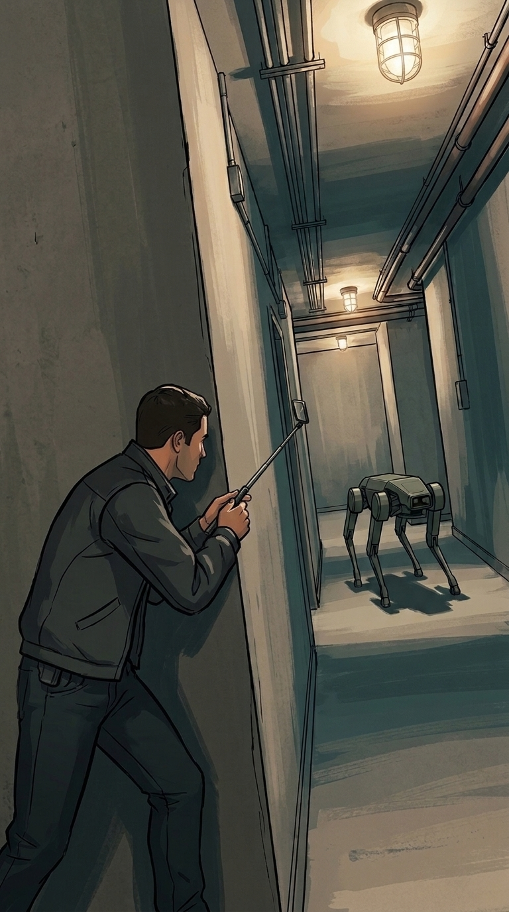

Action Economy, OODA Loops, The Count-Up Tick Clock & Multi-Sensory Perception
Rust Engine Implementation:
crates/satya-engine/src/action_economy.rs(ActionTimeScale,OodaPhase,ClockActorEntry,compute_action_time_factor,compute_effective_tick_cost,evaluate_full_ooda_cycle,evaluate_ooda_interrupt_pivot,resolve_clock_tie_break) andcrates/satya-engine/src/action_catalog_stealth.rs(ActionClockCategory,BaseActionSpec,SensoryChannel,ConcealmentTier,NoiseSignatureTier,CANONICAL_BASE_ACTIONS,evaluate_stealth_detection). Guided Play Example: See Guide 03: The0.25sCount-Up Clock,OODA& Multi-Sensory Stealth.
This chapter defines the canonical Action Economy, Temporal Resolution, and Multi-Sensory Perception System for Satya. Unlike traditional tabletop systems that slice time into rigid, alternating 6-second turns where every participant receives an identical bundle of "1 Standard Action + 1 Move Action + 1 Bonus Action," Satya resolves time on a continuous Count-Up Tick Clock.
Every physical, mental, perceptual, and communicative act consumes a concrete number of Ticks (TC). Crucially, Satya does not treat action speed as purely physical muscle twitch or visual nerve latency: in John Boyd's OODA Loop (Observe → Orient → Decide → Act), the bottleneck in real-world engagements is just as often cognitive processing and decision synthesis ("Quick Thinking") as it is physical movement. Every action on the clock is therefore governed by both Cognitive Decision Speed (D_cog: ANA, CRE, FOC) and Biomechanical Execution Speed (SPD, DEX, KIN, FOR, and Tactical Tempo T), scaled by the character's current Health, Fatigue, and Encumbrance State (action_time_factor) (for a complete reference of all mathematical variables and subscripts, see the Mathematical Notation, Variables & Formula Glossary).
1. Temporal Calibration: Ticks, Seconds & Minutes
To bridge micro-level tactical exchanges (gunfights, blade duels, vehicular evasions) and macro-level scene tracking (hemorrhaging, breath-holding, lockpicking, security response timers), Satya anchors the Tick to human neuromuscular and visual reaction latency (250 milliseconds):
| Time Unit | Tick Equivalent | Real-World / Narrative Benchmark |
|---|---|---|
1 Tick | 1 Tick | 0.25 Seconds (250 ms) — Human visual OODA reaction latency; dropping a held object; a single syllable or trigger break. |
1 Second | 4 Ticks | 1.00 Second — A fast snap-jab, a 1-step sidestep, or 7.5 meters of sprinting at average human SPD 10. |
1 Tactical Window | 20 Ticks | 5.00 Seconds — One standard HUD cycle on the Satya Combat Tracker (Round marker advances every 20 Ticks); typically encompasses 2–3 brisk exchanges. |
1 Minute | 240 Ticks | 60.0 Seconds (12 Tactical Windows) — Standard interval for Venous Hemorrhage ticks, Asphyxiation / Breath-Holding checks, and short technical tasks. |
15 Minutes | 3,600 Ticks | Scene / Post-Combat Recovery Window — Short rest interval for catching breath (-1 fatigue_level), applying field dressings, or conducting a room search. |
1 Hour | 14,400 Ticks | Overland / Investigation Interval — Standard interval for overland march distance, surgical procedures, and environmental exposure (Temperature / Hydration). |
(250 ms OODA Latency)
Fast Jab / Snap Shot (4–7 Ticks)
1 Tactical HUD Window
Standard Actions (8–12 Ticks)
Sustained Tasks, Bleed &
Breath-Holding Intervals
2. The Full OODA Loop: "Quick Thinking" (TC_decide) vs. Physical Execution (TC_act)
In traditional RPGs, a character with high physical Speed or Dexterity acts faster at everything, even when the situation requires complex tactical judgment or rapid improvisation. In Satya, every action on the timeline passes through two distinct latency phases mapped across the character's 25 Characteristics (see Character Characteristics & Aptitudes):
See this in play: Guide 03 — Entering the Clock & Two-Component Time Costs (
D_cog).
ITU · SIG · HEA · TAC
Sensory Intake & Threat Detection
INS · MEM
Pattern Recognition & Context
(Drilled Skill N ≥ 4 Shortcut) ⇢ Act
max(ANA, CRE) · FOC
Tactical Calculation or Snap Improvisation
SPD · DEX · KIN · FOR
Neuromuscular Firing & Motor Execution
2.1 Mapping OODA Phases to Satya Characteristics
- Cognitive Phase (
Observe→Orient→Decide) — "Quick Thinking" (TCdecide):• Observe (ITU,SIG,HEA,TAC): Raw sensory intake and pre-conscious threat detection (ITUserves as the canonical Observe pillar inOODA).• Orient (INS,MEM): Situational synthesis—reading an opponent's body language, intent, or feint (INSserves as the canonical Orient pillar inOODA) and recalling tactical doctrine (MEM).• Decide (Dcog:ANA,CRE,FOC):•ANA(Analysis): Rapid tactical geometry, calculating risk/reward, and selecting the optimal target, angle, or counter-move.•CRE(Creativity): Snap improvisation when a plan breaks down—spotting an unorthodox environmental interaction or lateral solution on the fly.•FOC(Focus): Attentional concentration and filtering out battlefield chaos to lock onto a course of action (Dcog = ⌊(max(ANA, CRE) + FOC) / 2⌋ serves as the canonical Decide pillar inOODA). - Biomechanical Phase (
Act) — Physical Execution (TCact):• Act (SPD,DEX,KIN,FOR): Neuromuscular twitch speed (SPDserves as the canonical Act pillar inOODA), fine manual coordination (DEX), whole-body agility (KIN), and overcoming weapon or body inertia (FOR).
2.2 The Cognitive Decision Score (Dcog — "Quick Thinking")
Parallel to a character's physical Speed (SPD) and Motor Tempo (T), Satya defines a character's Cognitive Decision Score (Dcog) as the Decide pillar of the OODA loop (without double-counting INS, which already governs the Orient pillar):
- Why max(ANA, CRE) + FOC Governs the
Decide(D) Pillar:• It pairs attentional concentration (FOC) with two distinct archetypes of real-world "quick thinkers": 1. The Cold Tactical Calculator (ANA): The chessmaster, engineer, or fire-team leader who instantly computes geometry, ballistics, and odds. 2. The Instinctive Improviser (CRE): The street-smart operative or unorthodox brawler who invents a lateral play on the spot when conventional doctrine fails. - How
D_cogShaves Decision Ticks (ΔTCdecide):ΔTCdecide = −⌊ Dcog − 102 ⌋• For every +2 points of Dcog above10, a character shaves-1 Tick(0.25s) off the cognitive decision component (TCdecide) of any non-reflexive or complex tactical action (down to a minimum floor of1 Tick, or0 Ticksfor drilled reflexes).• Conversely, a slow or rattled thinker (Dcog < 10) suffers+1 Tickper 2 points below10on complex/novel decisions as they hesitate to process changing conditions.
2.3 Two-Component Action Cost Formula (Base TC = TCdecide + TCact)
Instead of treating an action's Base Time Cost (Base TC) as a single monolithic physical block, Satya splits Base TC into Decision Ticks (TCdecide) and Execution Ticks (TCact):
(where ΔTCdecide = 0 for standard drilled reflex exchanges and ΔTCdecide = −⌊(Dcog − 10)/2⌋ for complex, tactical, or improvised actions; or min floor 1 for purely mental/perceptual micro-actions).
- Drilled / Reflexive Actions (Low TCdecide = 1–2 Ticks, High TCact):• A practiced boxing jab, parry, or speed-reload uses Boyd's "Implicit Guidance & Control" pathway (
Orient→Act), bypassing slow conscious deliberation (ΔTCdecide = 0).• Skill Level (N) Reflex Compression: Higher skill proficiency (N) converts consciousDecideticks into conditioned muscle memory, reducing TCdecide by-1 Tickat N ≥ 4 and-2 Ticksat N ≥ 6 (to a floor of0–1 Tick). - Complex, Novel & Tactical Actions (High TCdecide = 3–8 Ticks, Low-to-Moderate TCact):• Re-assessing a shifting battlefield, improvising an environmental trap or dirty trick, redirecting an aborted action mid-stream, issuing a coordinated squad command, or operating unfamiliar equipment (ΔTCdecide = −⌊(Dcog − 10)/2⌋).• Where "Quick Thinking" Beats Raw Muscle Speed:• Suppose a Sharp Tactician (
D_cog 16,SPD 10) and a Slow-Thinking Athlete (D_cog 8,SPD 15) both face an unexpected structural collapse or ambush requiring a novel tactical improvisation (Base TC = 8: TCdecide = 5, TCact = 3).• The Sharp Tactician shaves-3 Ticksoff TCdecide (5 − 3 = 2 decision ticks) + 3 physical ticks = 5 Ticks total (1.25s).• The Slow Athlete suffers+1 Tickon TCdecide (5 + 1 = 6 decision ticks) and shaves-2 Ticksoff TCact (3 − 2 = 1 physical tick) = 7 Ticks total (1.75s).• Result: The Quick Thinker acts2 Ticks(0.5s) earlier despite having5points less physicalSPD!
3. How the Continuous Count-Up Clock Works
- Entering the Clock (
Starting Tickvia 4-PillarOODA):• When a time-sensitive scene or combat begins, each participant calculates their 4-Pillar OODA Initiative, where each term corresponds directly to one phase of Boyd's loop — Observe (ITU), Orient (INS), Decide (Dcog), and Act (SPD):OODA = ⌊ ITU + INS + Dcog + SPD4 ⌋ where Dcog = ⌊ max(ANA, CRE) + FOC2 ⌋• Aware, ready participants enter the clock at:Tickstart = max(1, 15 − OODA − Awareness Margin)• Surprise / Ambush Penalty (Orientation Freeze): An unaware or ambushed character adds+8to+12Ticks (2.0–3.0 secondsof startle/OODA orientation freeze) to their Tickstart, reduced by their Quick Thinking offset ⌊(Dcog − 10)/2⌋ and Discipline (DIS). - Lowest Tick Acts Next:• The clock counts upward (
Tick 1, 2, 3, ...). Whoever is currently at the lowest Tick declares and initiates their action.• Ties on the same Tick are resolved simultaneously (or ordered by higherOODA, then Dcog, thenSPD). - Action Resolution & Clock Advancement:• When a character on Tickcurrent executes an action with an Effective Tick Cost (
Effective TC), their action resolves and advances their personal clock marker to:Ticknext = Tickcurrent + Effective TC - Declaration vs. Completion & Interrupts:• Actions have a Decision & Wind-Up Phase (TCdecide + first half of TCact) and a Release / Recovery Phase (remaining TCact).• If Combatant A begins a slow, low-
Tempohaymaker onTick 3that takes12 Ticks(completing onTick 15), and Combatant B onTick 5executes a fast5-Tickstop-thrust or snap-shot (completing onTick 10), Combatant B's strike lands first on Tick 10 and can interrupt or spoil Combatant A's wind-up!
3.1 Quick Reference: Engine Combat Stances (CombatStance)
In satya-engine (crates/satya-engine/src/dice_probabilities.rs), six canonical stance presets summarize common action time costs (TC):
POWER(TC = 14/3.50s): Heavy, high-impact melee or ordnance strike; slower recovery.RANGED_AIMED(TC = 12/3.00s): Deliberate sighted fire; grants accuracy at higher tick cost.MANEUVER(TC = 11/2.75s): Mobile tactical engagement, flanking, or repositioning during an exchange.- Unstanced / Standard Action (
TC = 10/2.50s): Default skill check or interaction. STABILITY(TC = 9/2.25s): Braced, defensive posture prioritizing guard and low tick recovery.RANGED_SNAP(TC = 7/1.75s): Fast reactive snapshot at reduced time cost.
4. Base Action Time Costs (Base TC = TC_decide + TC_act) Reference Catalog
4.1 Unarmed Martial Arts, Armed Melee & Ranged Combat Techniques (CombatTechniqueId)
See Melee Combat (melee_combat.md §3) and Ranged Combat (ranged_combat_and_armor.md §2.1) for the full 30-entry COMBAT_TECHNIQUE_CATALOG and how each move interacts with the Tactical Triad (Tempo, Control, Force):
Action / Technique (CombatTechniqueId) | Category | Base TC (Decide + Act) | Real-Time Equiv. | Notes & Governing TCF Mechanics |
|---|---|---|---|---|
| Drop Held Object / Release Grip | Reflexive | 1 (1 + 0) | 0.25s | Pure neural release; free of action_time_factor unless fingers are cramped. |
Unarmed Head Butt (Clinch Crown) | Unarmed Strike (Reach 0) | 5 (1 + 4) | 1.25s | Clinch-only cranial strike (0.95× POW, +1 Root, +2 facial Daze Δint). |
Unarmed Elbow Strike | Unarmed Strike (Reach 0–1) | 6 (1 + 5) | 1.50s | Compact close/clinch slash (1.15× POW, +1 Guard). |
Unarmed Punch / Knee Strike | Unarmed Strike (Reach 0–1) | 7 (1 + 6) | 1.75s | Punch (1.00× POW, jab to haymaker via TCF); Knee (1.25× POW, +2 trauma in Clinch). |
Unarmed Kick (Teep / Calf / Roundhouse) | Unarmed Strike (Reach 1–2) | 9 (2 + 7) | 2.25s | Longest unarmed reach (1.35× POW, -1 Guard, -2 Root while on one leg). |
Armed Melee Thrust vs. Swing | Armed Strike (Reach 1–4) | Wpn - 1 vs. Wpn + 1 | 1.75–2.75s | Thrust: -1 Base TC, +1 Guard, +1 Pen; Swing: +1 Base TC, -1 Guard, 1.25× POW. |
Control: Grab / Trap / Push | Control (Reach 0–2) | 7 (1–2 + 5–6) | 1.75s | Grab (Clinch entry, unarmed); Trap (limb/weapon bind, +1 Guard); Push (frame break vs. Root). |
Control: Disarm / Takedown / Throw / Lock | Control (Reach 0–2) | 8–9 (2 + 6–7) | 2.0–2.25s | Disarm (TC 8, unarmed/armed); Takedown, Throw (Kuzushi vs. Root), Lock (submission) TC 9. |
Intercept: Block vs. Parry | Intercept (Reach 0–4) | 6 (1–2 + 4–5) | 1.50s | Block: +2 Guard, absorbs ⌊ F/2 ⌋ impact; Parry: +3 Guard, 2× Seize Initiative ticks. |
Maneuver: Dodge / Root / Escape / Probe / Feint | Maneuver (Reach 0–4) | 6–7 (1–4 + 3–5) | 1.50–1.75s | Dodge (+⌊ T/2 ⌋ evasion), Root (+4 Root), Escape (TC 7), Probe (3+4), Feint (4+3, -2 Guard/hit). |
Ranged Snap Shot (Hip-Fire / Point-Shoot) | Ranged Shot | 6 (1 + 5) | 1.50s | Fast CQB reaction; ignores positive Acc and adds +2 Δext point-shoot penalty. |
Ranged Combat Sighted Shot / Double-Tap / Suppressive | Ranged Shot | 9 (2 + 7) | 2.25s | Eye-level sight picture (+0 Δ R), Double-Tap (+2 Δ R), or Suppressive Zone (+4 Δ R, Δmorale = ⌊ F/2 ⌋). |
Ranged Deliberate Aimed Shot | Ranged Shot | 12 (4 + 8) | 3.00s | Dcog compresses TC_decide = 4; unlocks full positive Acc + Optic and -2 Δext aim bonus. |
Ranged Brace / Rest Weapon / Cover Peek / Bounding / Overwatch | Ranged Maneuver | 4–10 | 1.00–2.50s | Brace (TC 5, -3 Reff), Cover Peek (TC 8, +3 Guard), Bounding (TC 10, +3 Δ R), Overwatch (TC 4). |
4.2 Weapon Handling, Gear Manipulation & Reloads
| Action | Base TC (Decide + Act) | Real-Time Equiv. | Governing Skill / Characteristic & Modifiers |
|---|---|---|---|
| Draw Pistol from Open / Speed Holster | 5 (1 + 4) | 1.25s | Reduced by 1 tick per +2 of SPD above 10 (min 2 ticks). |
| Draw Weapon from Concealment or Slung Back | 8 (1 + 7) | 2.0s | Sleight of Hand or Weapon Skill N >= 4 reduces by -2 ticks. |
| Switch Fire Selector / Activate Weapon Light/Optic | 2 (1 + 1) | 0.5s | Can be combined with Draw or Aim for +1 tick. |
| Speed Reload (Drop Magazine, Insert Fresh Mag) | 10 (1 + 9) | 2.5s | Drilled motor sequence; Weapon Skill N >= 4 + DEX reduces to 6–7 ticks. |
| Tactical Reload (Retain Partial Magazine) | 14 (2 + 12) | 3.5s | Stows partial magazine rather than dropping it on the ground. |
| Revolver / Internal Tube Magazine Reload (Per Round) | 4 / rd (0 + 4) | 1.0s / rd | 6 ticks (1.5s) total if using a speedloader or stripper clip. |
| Diagnose & Clear Simple Malfunction ("Tap, Rack") | 8 (3 + 5) | 2.0s | TC_decide = 3 (diagnosing misfire via D_cog / Weapon N) + TC_act = 5 (DEX). |
| Diagnose & Clear Complex Jam (Double-Feed) | 20–32 (6 + 14–26) | 5.0–8.0s | D_cog shaves diagnosis ticks; DEX shaves stripping/clearing ticks. |
| Retrieve Item from Tactical Vest / Belt Pouch | 6 (1 + 5) | 1.5s | Immediate access webbing. |
| Retrieve Item from Closed Backpack / Rucksack | 24–40 (4 + 20–36) | 6.0–10.0s | Requires slinging pack off shoulder and searching compartment. |
4.3 Movement, Posture & Tactical Environment Actions
| Action | Base TC (Decide + Act) | Real-Time Equiv. | Notes & Governing Mechanics |
|---|---|---|---|
Step / Pivot Facing (90°–180° Rotation) | 2 (1 + 1) | 0.5s | Included free in any Tempo >= 4 combat maneuver. |
| Drop to Prone / Duck Behind Cover | 3 (1 + 2) | 0.75s | Immediate gravity drop; imposes -4 to Tempo Cap while prone. |
| Stand Up from Crouching / Kneeling | 3 (0 + 3) | 0.75s | Costs +2 ticks if heavily encumbered (Tier 3+). |
Stand Up from Prone (Kip-Up vs. Standard) | 8 (or 4) (1 + 7/3) | 2.0s (or 1.0s) | Standard rise is 8 ticks; KIN >= 14 acrobatic rise takes 4 ticks. |
| Vault Low Obstacle / Dive Through Window | 6 (2 + 4) | 1.5s | Path judgment (D_cog/KIN) + athletic leap (SPD/FOR). |
| Improvise Environmental Action / Dirty Trick | 8 (5 + 3) | 2.0s | High TC_decide = 5: kicking a brazier, cutting a chandelier rope, ricochet (D_cog shaves up to 3 ticks). |
| Open Unlocked Door & Pie Corner | 6 (2 + 4) | 1.5s | Or 4 ticks (1.0s) to kick/shoulder-breach (FOR/MAS). |
| Apply Emergency Combat Tourniquet (CAT) | 24 (4 + 20) | 6.0s | Locate arterial bleed (4) + windlass tightening (20, First Aid DEX/FOC). |
| Administer Auto-Injector (Epi / Analgesic / Stim) | 8 (2 + 6) | 2.0s | 6 ticks draw + 2 ticks injection through clothing. |
4.4 Cognitive, Perceptual (OODA), & Communication Actions
| Action | Base TC (Decide + Act) | Real-Time Equiv. | Governing Characteristic (C) |
|---|---|---|---|
| Snap Threat Assessment / Glance Check | 2 (2 + 0) | 0.5s | SIG / ITU (OODA check; reduced to 1 tick if D_cog >= 14 or ITU >= 14). |
| Deliberate Tactical Scan ("Read the Room") | 6 (5 + 1) | 1.5s | SIG / FOC or HEA / FOC; D_cog shaves -1 to -3 ticks off scan synthesis. |
Read Opponent's Stance / Psyche (Empathy / Tactics) | 4 (4 + 0) | 1.0s | INS / ANA; estimates opponent's Morale state or TCF commitment (min 1 tick). |
| Formulate Coordinated Squad Order / Tactical Plan | 6 (4 + 2) | 1.5s | ANA / ELO (4 ticks tactical synthesis reduced by D_cog + 2 ticks callout). |
| Shout Brief Warning / Tactical Callout (1–4 words) | 2 (1 + 1) | 0.5s | Can be performed concurrently with physical actions at +0 TC. |
| Complex Verbal Order / Social Combat Exchange | 12–24 (6 + 6–18) | 3.0–6.0s | Argument formulation (D_cog: ANA/CRE/INS) + verbal delivery (ELO/PRE). |
5. How Characteristics, Quick Thinking (D_cog), Health & State Modify Action Costs
In Satya, two characters performing the exact same action rarely take the same number of ticks. Action speed is dynamically shaped by four mechanical layers:
TC_decide (Cognitive/OODA) + TC_act (Biomechanical)
(e.g. Tactical Aimed Shot = 4 Decide + 8 Act = 12 Ticks)
TC_decide_eff = max(0..1, TC_decide - floor((D_cog - 10)/2) - Skill_Reflex)
(Mental Fatigue, Concussion & Panic degrade D_cog)
TC_act_eff = round(TC_act × action_time_factor) - (Tempo - B)
(Physical Fatigue, Wound Shock & Gear Load scale TC_act)
Effective TC = max(1, TC_decide_eff + TC_act_eff)
5.1 Layer 1: Systemic Health, Fatigue & Encumbrance (action_time_factor)
Physical exhaustion, systemic trauma shock, heavy gear load, and neurological status conditions degrade both physical execution and mental processing (detailed in Health, Anatomical Trauma, Fatigue & Mental Conditions, Movement, Encumbrance & Vehicles, and Environmental Hazards, Survival & Field Pharmacology):
| Degrading Condition | Multiplier Added to action_time_factor | Cognitive vs. Physical Impact |
|---|---|---|
Per Level of fatigue_level (1–5) | +0.10 (+10%) per level | Slows both TC_decide and TC_act (+30% at Fatigue 3). |
Per Tier of wound_shock_index (1–4) | +0.25 (+25%) per tier | Pain/hypovolemia slows both TC_decide and TC_act (+50% at Shock 2). |
Encumbrance Tier 2 (Tactical Load) | +0.10 (+10%) | Applies to physical TC_act only (does not slow pure TC_decide thinking). |
Encumbrance Tier 3 (Heavy Load) | +0.25 (+25%) | Applies to physical TC_act only. |
Encumbrance Tier 4 (Overloaded) | +0.50 (+50%) | Applies to physical TC_act only. |
Concussed / Dazed / Acute Mental Shock | +0.25 to +0.50 + -4 to D_cog | Directly attacks Quick Thinking (TC_decide), adding +2 to +4 decision ticks. |
IMPORTANTCompounding Fatigue + Shock: A combatant at
Fatigue 2(+0.20) andWound Shock 2(+0.50) operates ataction_time_factor = 1.70. A10-tickstrike now costs17 ticks(4.25 seconds), AND their Effective Tactical Pool (Peff) has shrunk by-8points, making it impossible to buy those ticks back withTempo!
5.2 Layer 2: Cognitive Speed ("Quick Thinking" Dcog & Skill Reflex Compression)
Before physical execution begins, the character's mind must complete the Observe → Orient → Decide phase (TCdecide):
- Quick Thinking Offset (⌊(Dcog − 10)/2⌋): Driven by ⌊(max(ANA, CRE) + FOC) / 2⌋. Shaves
-1 Tickper2points of Dcog above10(-1at12,-2at14,-3at16,-4at18). - Skill Reflex Compression (ΔTCskill): For drilled techniques within a trained skill (
N >= 4shaves-1 Tick,N >= 6shaves-2 Ticks), training compresses consciousDecidetime down to a conditioned reflex floor (TCfloor = 0 or 1).
5.3 Layer 3: Combat & Athletic Physical Execution (Tempo T & SPD)
Once the decision is made, Speed (SPD) defines the character's Tempo Ceiling (Tmax = SPD − Leg Wounds), and the points allocated to Tempo (T) relative to their neutral baseline (B = ⌊ Pbase / 3 ⌋) directly shave or add ticks to the action (see Tactical Triad & Combat Pools):
- Drilled vs. Complex Combat Actions: For standard drilled combat strikes and reloads, ΔTCdecide = 0 (resolved directly via max(2, round(Base TC × action_time_factor) − (T − B))). Whenever a combatant performs a tactical scan, feint, ballistic calculation, malfunction clearance, environmental improvisation, or mid-action OODA pivot, ΔTCdecide = −⌊(Dcog − 10)/2⌋ applies!
- Leg / Hip / Ankle Wounds: Directly slash Tmax. If a character's Tmax is slashed below their baseline B (e.g., B = 8, but a shattered knee locks Tmax = 2), they are forced to take a negative (T − B) offset—automatically adding
+6 ticksto every movement or melee action!
5.4 Layer 4: Non-Combat Physical, Technical & Mental Actions (Characteristic Speed Scaling)
When performing a non-combat action on the clock (such as picking a lock under fire, hacking a keypad, performing emergency triage, or analyzing a sensor readout) where the Combat Tactical Pool is not split into TCF:
- Dual Cognitive + Motor Speed Offset (ΔTCdecide + ΔTCact):• Cognitive Component (TCdecide): Adjusted by Quick Thinking −⌊(Dcog − 10)/2⌋.• Manual / Physical Component (TCact): Adjusted by −⌊(Cmotor − 10)/2⌋, where Cmotor is
DEX(for fine manual tasks like lockpicking, surgery, electronics, reloads) orSPD/KIN(for gross athletic tasks).• Purely Mental / Analytical Tasks (cryptography, tactical calculation, diagnostics, recall):100%of the action is TCdecide, governed by Dcog (⌊(max(ANA, CRE) + FOC) / 2⌋) and ignoring physicalEncumbrancepenalties. - Extraordinary Success Time Compression:• Every cascade success beyond the first (
total_successes >= 2) on a timed task reduces the task's remaining duration by-15%per extra success (up to-45%at4+successes).
5.5 Aborting or Changing a Committed Action (OODA Reset / Action Pivot)
What happens if a character starts a 12-tick aimed shot or heavy melee swing on Tick 2 (scheduled to finish on Tick 14), but on Tick 6 an enemy bursts through a side door with a shotgun?
See this in play: Guide 03 — The Surprise Interruption at
Tick 6(OODA Reset).
- A character is never locked into suicidal inaction: on any Tick, they may abort their in-progress action and pivot to a new reaction (e.g., diving behind cover or firing a snap-shot).
- The
OODAReset Penalty (WhereD_cog&ITUShine): Abandoning a committed motor program mid-execution, dumping the old mental plan, and orienting to a new threat costs a Pivot Penalty governed directly by Quick Thinking (Dcog) and Intuition (ITU):OODA Reset Ticks = max(1, 5 − ⌊ Dcog + ITU5 ⌋)• Adaptive Genius / High-Speed Operator (Dcog = 15, ITU = 15): Pivots in1 tick(0.25s)—almost zero hesitation between aborting the old action and initiating the new response.• Average Combatant (Dcog = 10, ITU = 10): Pivots in3 ticks(0.75s).• Sluggish, Tunnel-Visioned, or Concussed Combatant (Dcog = 6, ITU = 6): Takes4–5 ticks(1.0–1.25s) just to mentally dump their old plan and re-orient before their new action's ticks begin counting.
6. Multi-Sensory Perception, Stealth & Illumination (Observe Phase)

See this in play: Guide 03 — Multi-Sensory Stealth in the Blacked-Out Corridor (
Observe). Complete Stealth, Awareness & Investigation Reference: See Stealth, Passive Awareness, Active Observation & Investigation (stealth_awareness_and_investigation.md) for full Passive (0 Ticks,AWR) vs. Active (6 Ticks) rules, Attention States & Watch Fatigue, the 4-stage Alertness Ladder, Acoustic/Thermal/RF/Social Stealth, Tail Craft (SDR), and Forensic Trace Decay.
Because Satya models six distinct Sensory Characteristics (SIG, HEA, TAC, OLF, TAS, ITU) rather than a single generic "Perception" stat, the OODA Observe phase operates in two clock regimes:
- Background Passive Awareness (
0 Ticks, GM-Hidden):• Unalerted guards and bystanders use their derived General Awareness score AWR = ⌊(max(SIG, HEA) + FOC + ITU)/3⌋ with degraded dice pairs (N = 1whenDistractedorRoutinePatrolBored, or ⌊ N/2 ⌋ whenVigilantWatch) plus Watch Duty Fatigue (+1per2 hrs, max+4). - Deliberate Active Observation (
6 Ticks/1.5sActiveScanRoomOrSectorSweep):• Spending6 Ticks(ActiveScanRoomOrSectorSweep) lets an observer commit to a specific sensory channel (SIG/FOC,HEA/FOC,TAC/FOC,OLF/INS,TAS/INS,ITU/INS), unlock their full Observation / Surveillance skill pairs N, and bring electro-optical sensors (Gen3PlusNvgorThermalFlir) to bear.• AnyGrazingTieSuccessorSuccessWithFloorBreachby a sneaking infiltrator advances the observer along the 4-Stage Alertness Ladder (Level 0 Unaware→Level 1 Suspicious[+4Surprise Freeze] →Level 2 Searching→Level 3 Compromised) rather than triggering instant all-knowing combat (evaluate_alertness_transition).